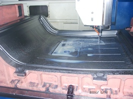
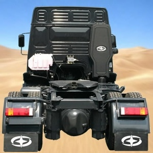

|
ASKAM
tarafýndan önemli oranda yerli tasarým ve mühendislik katkýsýyla
üretilerek ilk olarak 2004 Aðustos ayý sonunda düzenlenen
Ýzmir Enternasyonel Fuarý'nda tanýtýlan "Fargo Hi-Ex",
yüksek konfor, geniþ kabin ve ekonomik fiyatý ile büyük ilgi
gördü.
Gerekli
tüm teknik ve mekanik donaným yatýrýmlarýný tamamlayan ASKAM,
sadece Ar-Ge için araçla ilgili çeþitli deðiþik tasarým
çalýþmalarýnda kullanýlmak üzere 2 milyon dolarlýk bilgisayar,
yazýlým, personel yatýrýmý gerçekleþtirdi. Müþteri beklenti
ve ihtiyaçlarýný tespit edebilmek için tüm kamyon þoförlerine
yönelik "ASKAM Geleceðe Bakýþ" toplantýlarý düzenlendi.
ASKAM, tüm bu yeniden yapýlanmanýn sonucu olarak iki yeni
araç geliþtirdi. Ýlki uzun yol kategorisinde maksimum konforu
amaçlayan tamamen yeni bir araç Fargo Hi-Ex, diðeri ise
müþteri beklentileri doðrultusunda altyapýsý tamamen yenilenerek
pazara sunulan þirket klasiði, þantiye ortamýnda kullanýma
yönelik AS950 Süper.
- ASKAM,
ön panjur ve tamponun tasarýmý ve prototip imalatý konusunda
Avitaþ
A.Þ. ile çalýþtý. Firmanýn endüstriyel tasarýmcýsý
Barýþ Altýndað, Marmara Üniv. Endüstri Ürünleri
Tasarýmý Böl. öðretim üyelerinden Yrd. Doç. Dr. Hakan
Ertem danýþmanlýðýnda ASKAM'a 80 civarýnda alternatif
tasarým sundu. Seri imalat kararý verilmeden evvel en
çok beðenilen iki tasarýmýn 1:1 ölçekli prototipleri Avitaþ'da
imal edildi...
- 3D
Optik tarama hizmeti Cadem
A.Þ.'den alýndý. Bu iþlemde Alman GOM firmasýnýn üretmiþ
olduðu ATOS II ve TRITOP sistemleri kullanýldý.
- Sac
kalýp tasarýmý ve imalatý Form
2000 A.Þ. tarafýndan yapýldý. Form 2000, Derin çekme
analizlerinde LS-DYNA yazýlýmýný kullandý.
- Tüm
ürün geliþtirme prosesi boyunca ASKAM, Form 2000 ve Avitaþ
tarafýndan 3D modellemede CATIA V5 kullanýldý.
Aþaðýda,
eskis safhasýndan kalýp iþlemeye kadar Fargo Hi-Ex'in ürün
geliþtirme aþamalarýna ait bazý resimler görülmektedir:
|
|
|
|
Endüstriyel
tasarýmýn ilk aþamalarýnda biri, Avitaþ A.Þ.
|
80
civarýnda alternatif tasarýmdan bir örnek, Avitaþ A.Þ.
|
|
|
|
|
Kabinin
optik 3D tarama iþlemi, Cadem A.Þ.
|
Yeni
tampona ait ahþap prototip kalýbý, Avitaþ A.Þ.
|
|
|

|
|
Tavan
sacý derin çekme simülasyon sonucu, LS-DYNA, Fom 2000
A.Þ.
|
Tavan
sacý kalýbý CNC tezgahta iþeniyor, Form 2000 A.Þ.
|
| Not:
Fargo
Hi-Ex'in ASKAM'ýn çözüm ortaklarýyla yürütülen eþ zamanlý
mühendislik çalýþmalarýyla 8 ay gibi kýsa bir sürede nasýl
geliþtirildiðine dair detaylý bilgiler içeren, ASKAM Karoseri
Aksamý ve Ar-Ge Müdürü Erdinç Karaüç ile yapýlmýþ
bir röportajý ve detaylý fotoðraflarý TurkCADCAM.net
Dergisi'nin ilk sayýsýnda bulabilirsiniz. |

Fargo
Hi-Ex ilk defa basýna açýklanýyor
Ülkemizde
üretilen araçlar içinde iç derinliði en fazla olan, konforun
gerektirdiði en son teknoloji ürünü, ergonomik sürücü ve yolcu
koltuðu kullanýlan ASKAM Fargo Hi-Ex, þoför ve yolcu için
maksimum konfor için dizayn edilmiþ çift yataðý ve yataklarýn
olduðu bölümde en yüksek taban-tavan mesafesi sunuyor. 292
HP gücünde, sessiz, elektronik kumandalý, seyir kontrollü,
Euro 2 standartlarýnda ve çevreci motoru olan araç, rampalarý
çýkmada ve inmede, hýzlanmada ve yavaþlamada kullaným kolaylýðý
saðlayan 16 ileri 2 geri vites ile donatýldý. Hi-Ex ayrýca,
içinde yer alan klima, buzdolabý gibi aksesuarlarýyla konfor
ve kullaným rahatlýðý da saðlýyor. En ekonomik yakýt sarfiyatý
ile yükü hissetmeden taþýyan Fargo Hi-Ex, konfor ve kesintisiz
ulaþým için WC seçeneði sunuyor. ASKAM, Fargo Hi-Ex ile uzun
yollarý kýsaltýyor. Hi-Ex ismi, aracýn yüksekliði ve geniþliðini
vurgulayan High ve Extended kelimelerinin kýsaltýlmasý ile
oluþturuldu.
Aracýn ön panjur ve tamponu ASKAM'ýn çözüm ortaklarýndan Avitaþ
A.Þ. tarafýndan tasarlanmýþ ve cam elyaf takviyeli plastikten
(FRP, Fiber Reinforced Plastic) imal edilmektedir. Yukarýdaki
fotoðrafta, ADesign
2004 Fuarý'nda Avitaþ standýnda sergilenen ASKAM Fargo
Hi-Ex modeli araç görülmektedir.
ASKAM
Kamyon Yönetim Kurulu Baþkaný Erdem Bektaþ: "Türkiye'nin
ilk kamyon üreticisi þirketiyiz, uzun yýllar boyunca Türkiye'nin
en büyük ilk 50 sanayi kuruluþu içinde yer aldýk. Ýlk 3 dingilli
araç ASKAM tarafýndan Türkiye pazarýna sunuldu. Þuan 15 ton
ve üstü aðýr vasýta pazarýnýn yaklaþýk yüzde 35'ini oluþturan
8X2, 4 dingilli araçlarý ilk olarak ASKAM geliþtirerek ticari
araç kullanýcýlarýnýn hizmetine sundu. Bunun gibi daha pek
çok ilkimiz var ve bundan sonra daha pek çok ilke imza atmaya
ve en kýsa zamanda yeniden Türkiye'nin en büyük sanayi kuruluþlarý
içinde yer almaya hazýrlanýyoruz." dedi.
ASKAM,
Türkiye çapýnda 58 yetkili satýcý ve 71 yetkili servis ile
ticari araç sürücülerine hizmet vermekte olup, 3.5 ton hafif
ticariden 40 ton aðýr ticariye kadar tüm ticari araç kategorilerinde
araç üretiyor ve satýþýný gerçekleþtiriyor. ASKAM yurtiçi
satýþlarýnýn yaný sýra komple araç olarak þuanda Orta Doðu,
Kuzey Afrika ve Baðýmsýz Devletler Topluluðu ve Türk Cumhuriyetleri'ne
ihracata devam ediyor.
Ayrýca
bu ülkeler dýþýnda AB ülkelerinden Almanya ve Avusturya'ya
da yan sanayi mamulleri üretip ihraç ediyor. ASKAM, misyonunu
"Baþta Türkiye olmak üzere hareket alaný olarak tanýmladýðý
tüm pazarlarda müþteri beklentileri ve ihtiyaçlarý doðrultusunda
geliþtirilmiþ, teknolojinin tüm gereklerini yine müþteri ihtiyaçlarý
doðrultusunda üzerinde barýndýran; konforlu, çevreye duyarlý
araç üretmek ve bu araçlarý sahip olduklarý bu üstün özellikleriyle
olabilecek en uygun fiyatla müþterilerine sunmak ve bu araçlarla
ilgili bol ve yaygýn yedek parça ile 24 saat kesintisiz tamir,
bakým ve onarým hizmeti vermek" olarak belirlemiþ durumda.
ASKAM
hakkýnda:
Kurulduðu
günden itibaren faaliyetlerine Chrysler Kamyon Ýmalat ve Ticaret
A.Þ. ticari unvaný ve Dodge-Desoto-Fargo markalarý ile devam
eden þirket, Amerikan Chrysler ile Alman Daimler Benz birleþmesi
sonucu unvan deðiþikliðine giderek 2002 Ocak ayýndan itibaren
ASKAM unvanýný alarak, bünyesinde bulunan Fargo ve Desoto
markalarý ile üretimini sürdürdü. Haziran 2003'te, Çiftçiler
Holding'in þirket hisselerini tek baþýna devralmasýyla yeniden
yapýlanma dönemine giren ASKAM, üretim ve ticari faaliyetlerini
iki ayrý þirket çatýsý altýnda topladý. Desoto ve Fargo markalarýyla
pazara sunduðu kamyon ve kamyonetlerin üretimi Çayýrova-Gebze
fabrikasý ASKAM Kamyon Ýmalat ve Ticaret A.Þ. tarafýndan;
ticari faaliyetleri, yani tüm yurtiçi, yurtdýþý satýþlar,
pazarlama ve satýþ sonrasý hizmetleri ise ASKAM Otomotiv San.
ve Tic. A.Þ. tarafýndan yürütülüyor.
Daha
fazla bilgi için:
| Not:
Fargo
Hi-Ex'in ASKAM'ýn çözüm ortaklarýyla yürütülen eþ zamanlý
mühendislik çalýþmalarýyla 8 ay gibi kýsa bir sürede nasýl
geliþtirildiðine dair detaylý bilgiler içeren, ASKAM Karoseri
Aksamý ve Ar-Ge Müdürü Erdinç Karaüç ile yapýlmýþ
bir röportajý ve detaylý fotoðraflarý TurkCADCAM.net
Dergisi'nin ilk sayýsýnda bulabilirsiniz. |
|